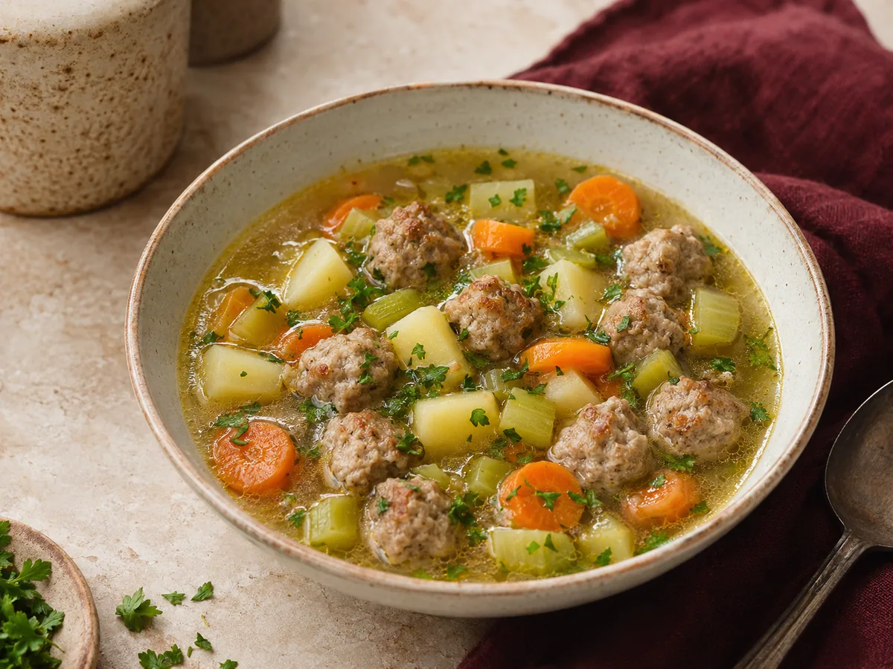

Zupa
Zupa ar gaļas bumbiņām un dārzeņiem
Viegla dārzeņu zupa ar maigām gaļas bumbiņām, kartupeļiem un svaigiem zaļumiem.
Skatīt recepti
Sastāvdaļas
- 400 g maltas cūkgaļas vai liellopa gaļas
- 1 mazs, smalki sagriezts sīpols
- 1 ola un 2 ēdamkarotes rīvmaizes
- 2 burkāni, 3 kartupeļi un 2 selerijas kāti
- 1,5 l buljona, pētersīļi, sāls un pipari
Pagatavošana
- Sajauciet malto gaļu ar sīpolu, olu, rīvmaizi, sāli un pipariem, pēc tam izveidojiet mazas gaļas bumbiņas.
- Uzvāriet buljonu uz lēnas uguns un pievienojiet sagrieztus burkānus, kartupeļus un seleriju.
- Pēc 10 minūtēm pievienojiet gaļas bumbiņas un vāriet vēl 20 minūtes.
- Pārbaudiet, vai gaļas bumbiņas ir gatavas, pievienojiet garšvielas un pētersīļus.